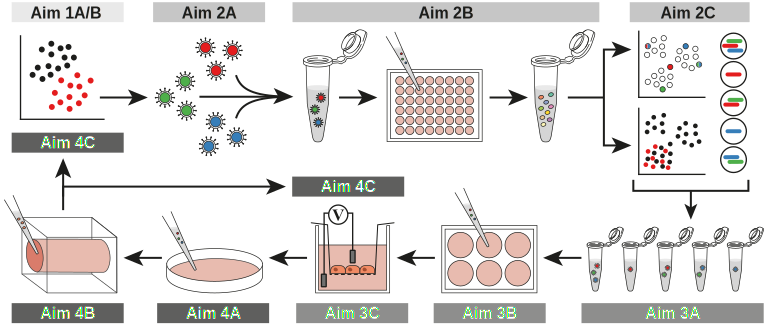

Technical illustration work
aeffen | Cambridge, MA | Oct 24, 2021 | last updated Oct 24, 2021
I render scientific concepts for manuscripts, grant proposals, Wikipedia, and for fun. I take requests via email, my talk page, or Twitter.

Major stages of myelin sheath formation.

Single-cell sequencing experiment design made for Garcia & Sun et al. 10X oil droplet and in silico sorting cartoon images are drawn by others and faded out. (preprint available)
Iterative experimental workflow prepared for a grant proposal submission.